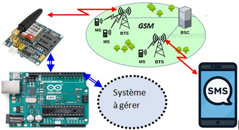
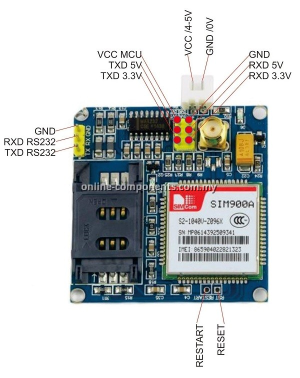
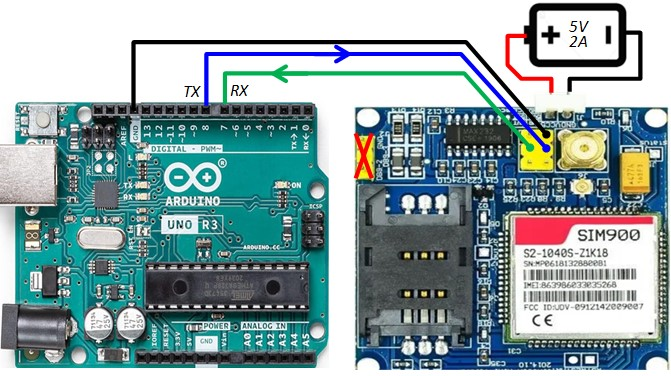

Objectif
Dans ce tutos, on va apprendre à gérer un système distant à l'aide de messages SMS. L'avantage d'un tel système
est la couverture du réseau GSM qui est quasi totale

Module SIM900
Dans ce tuto, nous allons utiliser le module SIM900A, mais tout ce qu'on va dire est valable pour d'autre
modules GSM comme le SIM800

voici quelques considérations concernant ce module
- Schéma de branchement:
- Ne pas utiliser le connecteur RS232. Ce connecteur, situé sur le bord du module avec 3
broches (RXD-RS232, TXD-RS232, GND), est compatible avec le standard RS232 où les niveaux logiques sont
inversés (0 logique = +12V, 1 logique = -12V).
- Arduino-UNO: Les entrées/sorties (RxD, TxD) de l'Arduino-UNO ont des niveaux TTL 5V (0 logique
= 0V, 1 logique = 5V). Il faut donc les relier aux broches du module (TXD 5V, RXD 5V).
- Autres cartes: Si vous utilisez une carte dont les entrées/sorties (RxD, TxD) ont des niveaux
TTL 3.3V (0 logique = 0V, 1 logique = 3.3V), reliez-les aux broches du module (TXD 3.3V, RXD 3.3V).
- Utilisation du port série : Sur l'Arduino, n'utilisez pas le port série intégré avec le module
GSM, car il est préférable de l'utiliser avec le moniteur série. Utilisez un port série software grâce à
la librairie SoftwareSerial. Par exemple, D8=TXD, D7=RXD. Il faut croiser les connexions avec le module
: TXD → RXD, RXD ← TXD.

- Alimentation:
Ne pas alimenter le module par le 5V issu de l'Arduino. Lors de la transmission vers le réseau
GSM, le module consomme au moins 1A. Je vous conseille d'utiliser une alim (5V, 2A) pour être tranquille.
- Carte SIM:
Quand on met une carte SIM dans le module. Si ce dernier réussit à s'enregistrer
auprès du réseau GSM de
l'opérateur, la LED D6 à coté de l'antenne s'allume. Si c'est pas le cas, on ne peut pas réaliser des
opération comme l'envoi ou la réception de SMS. Il va de soit que la carte SIM doit avoir un solde
suffisant.